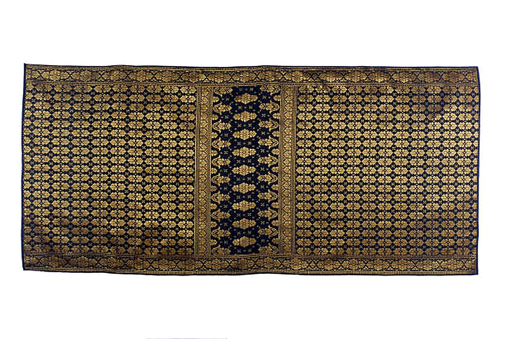
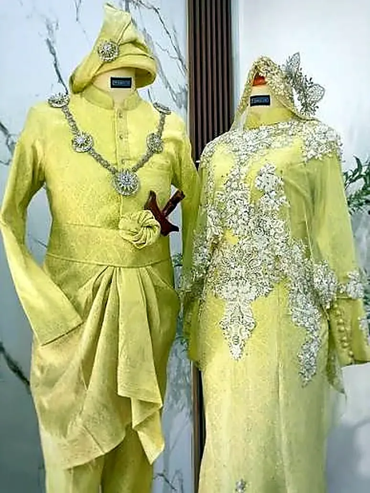
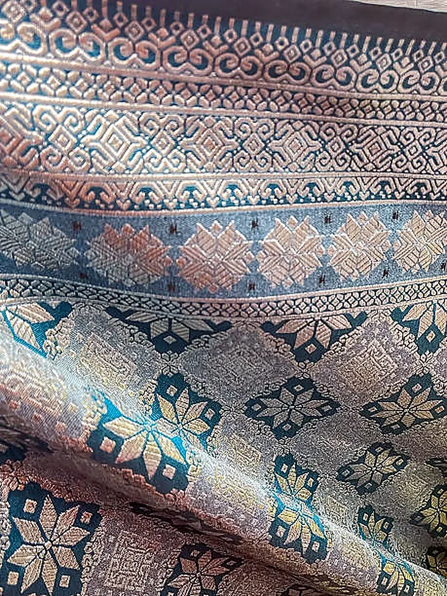
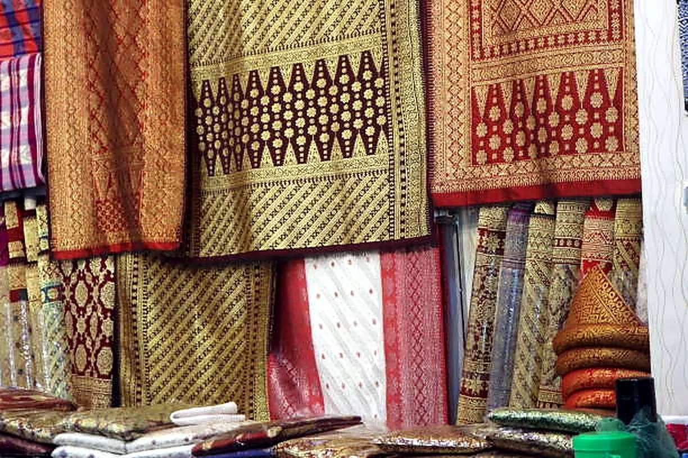
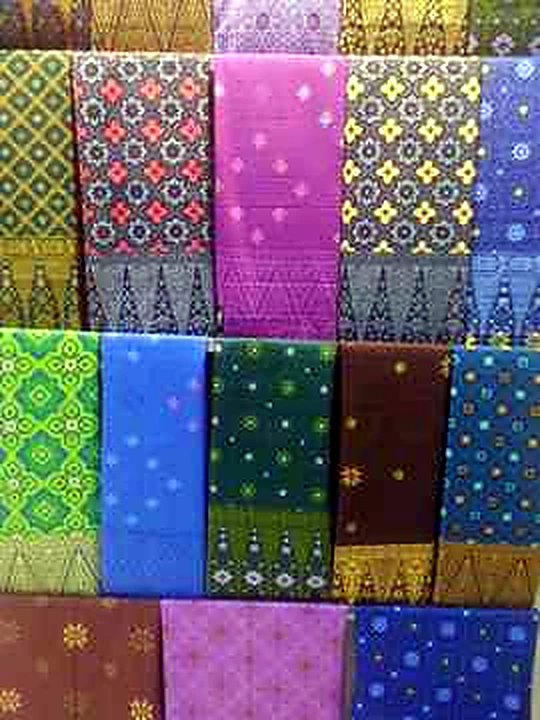

TEXTILE HERITAGE COLLECTION
Samping & Songket
Original photographs of traditional Malaysian textiles, ceremonial garments and the craft of songket weaving.
Songket is a traditional handwoven textile distinguished by supplementary gold or silver threads woven into a coloured base cloth. Samping is a waist cloth worn with traditional Malay attire; songket is one of the fabrics used to make it. This gallery showcases the five original product photographs supplied for Pacific Mega Marketing’s traditional textile collection.





Original photographs supplied for the business textile presentation. Product designs, colours and availability are subject to confirmation for each enquiry.
TEXTILE ENQUIRIES